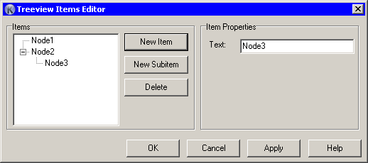

In left side of editor sits treeview control, where you can visually create item's structure.
Click on “New Item” button to create sibling items (i.e. same level items). Click “New Subitem” button to create a sub item under selected item. Click “Delete” button to delete any selected item.
On right side you can change item properties. “Text” is chnaging item text. “Image index” - icon index in the attached ImageList, “Selected index” - icon index for selected item.
Note, that all next items that have not explicitly set image index, will inherits previous item image. This is way how Microsoft's treeview control works.
Item changes immediately while you change text in the input box.